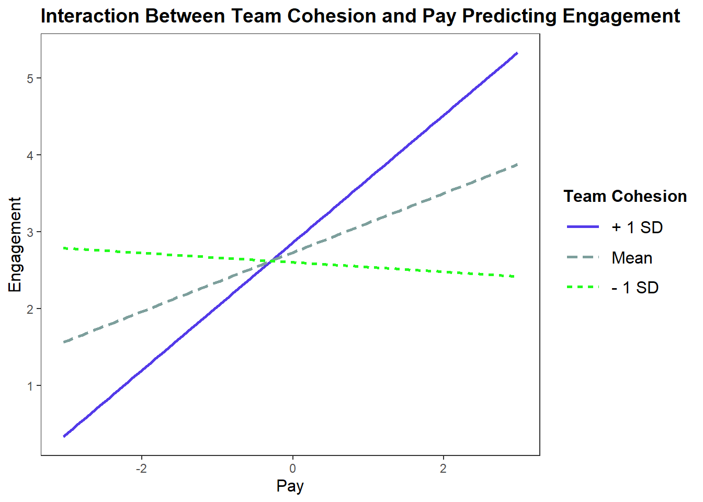
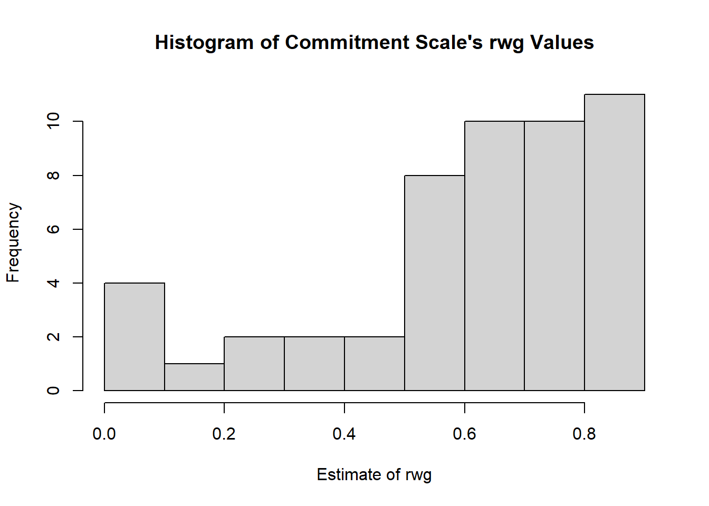

Using Multilevel Modeling To Understand Engagement, Autonomy, and Team Cohesion
Multilevel Modeling
R
lavaan
ICC1 & 2
Engagement
Team Cohesion
Inter-rater Reliability
Simple Slopes
Author
Matthew Swanson
Project Goal
A company has collected employee data and wants to understand the factors that shape the engagement of their workers. They collected data on the pay structure, autonomy level, and team cohesion each employee has with the overall goal of relating these variables to individual level engagement. Unique to this data is the level 1 / level 2 structure. For example, pay, engagement, and job autonomy (all level 1 variables) are assessed at the individual level, while team cohesion (a level 2 variable) is assessed at the team level. Thus, individuals are nested in teams. My goal is to use these variables to predict engagement.
Preparing Data for Model Building
Variables need to be centered and scaled prior to entering them into a multilevel model.
Running Multilevel Models to Predict Level 1 Engagement
Now that I have group and grand mean centered the data, I will begin building some models to predict engagement. First I will add the predictors into a model with engagement as the dependent variable. I also added in interactions between autonomy and pay and cohesion and pay to the model.
Several significant results emerged from these models. Specifically, employee pay was significantly related to individual levels of work engagement b=0.384, t(696)=2.721, p=.007. Additionally, results suggest that for every unit increase in pay, work engagement will increase by a value of 0.384, when autonomy and team cohesion are zero. However, job autonomy was did not moderate the relationship between pay and work engagement, b=0.349, t(696)=1.642, p=.101.
Regarding the level 2 predictor, team cohesion, results indicate that team cohesion was found to moderate the relationship between pay and work engagement, b=0.535, t(696)=3.218, p=.001.
Plotting The Multilevel Interaction
Given the significant interaction, I will now plot the interaction and calculate the simple slopes of this interaction to aid in interpretation.
interact_plot(model = Mod1, pred = pay.grp.c, modx = cohesion.grand.c,x.label ="Pay",main.title ="Interaction Between Team Cohesion and Pay Predicting Engagement",y.label ="Engagement", legend.main ="Team Cohesion",colors =c("Green","Blue")) +theme_apa(legend.use.title = T)

sim_slopes(model = Mod1, pred = pay.grp.c, modx = cohesion.grand.c)
JOHNSON-NEYMAN INTERVAL
When cohesion.grand.c is OUTSIDE the interval [-2.10, -0.19], the slope of
pay.grp.c is p < .05.
Note: The range of observed values of cohesion.grand.c is [-2.23, 1.69]
SIMPLE SLOPES ANALYSIS
Slope of pay.grp.c when cohesion.grand.c = -0.83100000291645215177994 (- 1 SD):
Est. S.E. t val. p
------- ------ -------- ------
-0.06 0.20 -0.31 0.76
Slope of pay.grp.c when cohesion.grand.c = 0.00000000000000001276756 (Mean):
Est. S.E. t val. p
------ ------ -------- ------
0.38 0.14 2.72 0.01
Slope of pay.grp.c when cohesion.grand.c = 0.83100000291645215177994 (+ 1 SD):
Est. S.E. t val. p
------ ------ -------- ------
0.83 0.20 4.19 0.00
The relationship between pay and work engagement is stronger for individuals with higher levels of team cohesion. The slope for pay will increase by 0.535 with every unit change of team cohesion. In other words, the simple effect of engagement on pay gets strengthened, or more positive, p=.001.
Simple slopes analysis reveals a significant moderated relationship between pay and engagement when autonomy is at its mean (b=0.38, t=2.72, p=.01) and when autonomy is one standard deviation above its mean (b=0.83, t=4.19, p<.01), but not for those who indicated having levels of autonomy at work that was at least one standard deviation below the mean (b-0.06, t=-0.31, p=.76).
Running Multilevel Models to Predict Level 1 Job Satisfaction
The client also collected data on job satisfaction and is interested in knowing if job satisfaction, at the individual level, also interacts with team-level cohesion in predicting work engagement. I also swapped dependent variables to test if pay was a significant predictor of job satisfaction.
model2.1<-lme(engage ~pay.grp.c, random =~1+ pay.grp.c|grpid, data = data, control =lmeControl(opt ="optim"))summary(model2.1)
Linear mixed-effects model fit by REML
Data: data
AIC BIC logLik
3768.164 3795.868 -1878.082
Random effects:
Formula: ~1 + pay.grp.c | grpid
Structure: General positive-definite, Log-Cholesky parametrization
StdDev Corr
(Intercept) 0.2572344 (Intr)
pay.grp.c 0.8923049 0.552
Residual 2.8579445
Fixed effects: engage ~ pay.grp.c
Value Std.Error DF t-value p-value
(Intercept) 2.9035266 0.1105163 699 26.272382 0.0000
pay.grp.c 0.4368898 0.1639982 699 2.663991 0.0079
Correlation:
(Intr)
pay.grp.c 0.14
Standardized Within-Group Residuals:
Min Q1 Med Q3 Max
-2.1116006 -0.6941114 -0.1975845 0.4728133 6.5971460
Number of Observations: 750
Number of Groups: 50
model2.2<-lme(jobsat ~ pay.grp.c, random =~1+ pay.grp.c|grpid, data = data, control =lmeControl(opt ="optim"))summary(model2.2)
Linear mixed-effects model fit by REML
Data: data
AIC BIC logLik
2168.444 2196.148 -1078.222
Random effects:
Formula: ~1 + pay.grp.c | grpid
Structure: General positive-definite, Log-Cholesky parametrization
StdDev Corr
(Intercept) 0.13429577 (Intr)
pay.grp.c 0.03052776 0.003
Residual 1.00544251
Fixed effects: jobsat ~ pay.grp.c
Value Std.Error DF t-value p-value
(Intercept) -0.06326777 0.04133513 699 -1.5306053 0.1263
pay.grp.c 0.03569705 0.03633069 699 0.9825591 0.3262
Correlation:
(Intr)
pay.grp.c 0
Standardized Within-Group Residuals:
Min Q1 Med Q3 Max
-2.80428971 -0.67306262 0.02052851 0.70766759 2.69852694
Number of Observations: 750
Number of Groups: 50
model2.3<-lme(engage ~ pay.grp.c + jobsat.grp.c, random =~1+ pay.grp.c + jobsat.grp.c|grpid, data = data,control =lmeControl(opt ="optim"))summary(model2.3)
Linear mixed-effects model fit by REML
Data: data
AIC BIC logLik
3758.69 3804.851 -1869.345
Random effects:
Formula: ~1 + pay.grp.c + jobsat.grp.c | grpid
Structure: General positive-definite, Log-Cholesky parametrization
StdDev Corr
(Intercept) 0.3136581 (Intr) py.gr.
pay.grp.c 0.9135909 0.425
jobsat.grp.c 0.5947158 -0.321 0.388
Residual 2.7700579
Fixed effects: engage ~ pay.grp.c + jobsat.grp.c
Value Std.Error DF t-value p-value
(Intercept) 2.9035266 0.1104472 698 26.288815 0.0000
pay.grp.c 0.4211243 0.1653490 698 2.546882 0.0111
jobsat.grp.c 0.3767563 0.1374256 698 2.741530 0.0063
Correlation:
(Intr) py.gr.
pay.grp.c 0.133
jobsat.grp.c -0.079 0.175
Standardized Within-Group Residuals:
Min Q1 Med Q3 Max
-2.1932653 -0.6760609 -0.1646372 0.4790537 6.6411560
Number of Observations: 750
Number of Groups: 50
While both pay (b=0.421, t(698)=2.547, p=.011) and job satisfaction (b=0.377, t(698)=2.742, p=.006) significantly predicted work engagement, pay was not a significant predictor of job satisfaction (b=0.036, t(699)=.983, p=.326).
Effect Size
Now that I have determined which variables predict engagement, the question still remains of how strong these effects are. Given the multilevel nature of this data, I will analyze the ICC1 values which tells me the proportion of individual ratings that are due to group membership. I will also look at ICC2 values to establish the stability of mean ratings in discriminating between groups (participants are grouped by their work teams).
ICC1 for both job satisfaction (ICC1=.017) and autonomy (ICC1=.018), both of which would be considered “small” effects. The proportion of variance in ratings that is due to between-target differences is small, suggesting that individuals rating are only slightly attributable to group membership.
The ICC2 for job satisfaction (ICC2=.210) is larger than the ICC2 for autonomy (ICC2=.218), suggesting that the groups’ mean ratings were more stable and reliable for ratings of autonomy than for ratings of job satisfaction. In other words, the mean ratings of autonomy were better able to distinguish between groups than the mean ratings of job satisfaction.
Inter-rater Reliability
When looking at the data, I noticed that the commitment scale was created by aggregating three commitment items into an overall scale. To double-check that employees tended to rate similarly across the three items (i.e., an individual rating a score of 4 on the first commitment item would likely rate similarly for commitment items 2 & 3) and that it is appropriate to use an aggregate commitment scale, I will assess inter-rater agreement. Note: rwg is the symbol used to denote this form of inter-rater agreement and will be utilized in the code and interpretation below.
grpid rwg gsize
Length:50 Min. :0.0000 Min. :15
Class :character 1st Qu.:0.2345 1st Qu.:15
Mode :character Median :0.4333 Median :15
Mean :0.3962 Mean :15
3rd Qu.:0.5571 3rd Qu.:15
Max. :0.7952 Max. :15
hist(rwg.commit1.un$rwg, xlab ="Estimate of rwg", ylab ="Frequency", main ="Histogram of 1st Commitment Item's rwg Values")
grpid rwg.j gsize
Length:50 Min. :0.0000 Min. :15
Class :character 1st Qu.:0.5202 1st Qu.:15
Mode :character Median :0.6825 Median :15
Mean :0.6040 Mean :15
3rd Qu.:0.7884 3rd Qu.:15
Max. :0.8996 Max. :15
hist(rwgj.commit.un$rwg, xlab ="Estimate of rwg", ylab ="Frequency", main ="Histogram of Commitment Scale's rwg Values")

The mean rwg value for the first commitment item is 0.396 and the median is .433. Since this value is below the standard cutoff of .70, it is apparent that raters had low levels of agreement for the first commitment item. The mean rwg.j value for the commitment scale is .604 and the median is .683. While still below the cutoff score of .70 for high inter-rater agreement, the agreement level did increase when all three commitment items were considered, as compared to a single commitment item, helping support the usability of the composite score over a particular commitment item.